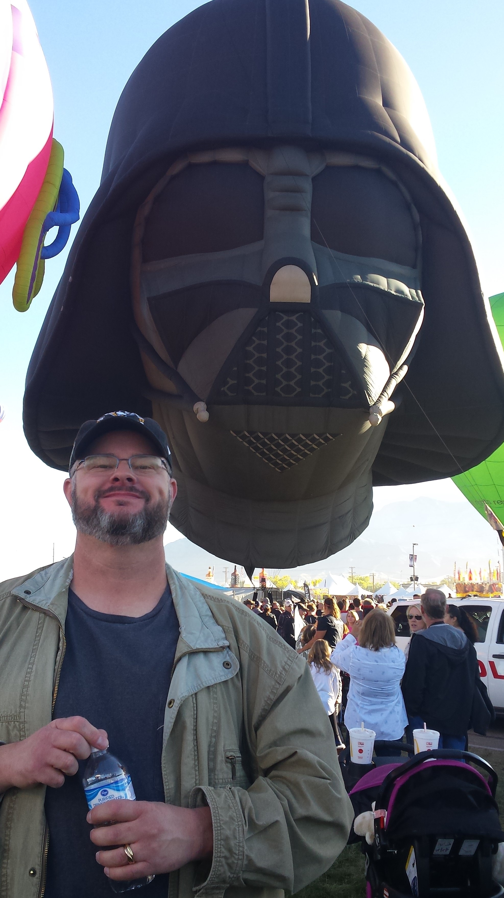

About Me
This page is about me, Tom Wickham. I was born in San Jose, California but raised in El Paso, TX and Albuquerque, NM. I recieved my B.S. in Geology from the University of New Mexico. After a few years in Las Vegas, NV I relocated to Reno, NV for the next 13 years where I worked as an analytical chemist in an environmental laboratory operating a GC/MS analyzing water samples for volatile chemical contamination.
I met my wife Melanie in Reno where we had our first two children, Aurora who is now 10 and Audrey who is now 8. We moved to the Denver area to be closer to our families, where we had our last two kids, Savannah who is now 5 and George who is currently 3.
After nearly 19 years as an ananlyst in the environmental lab industry, I am ready for a change. I have always been interested in computers and software and decided that web development would be an enjoyable second phase to my working career.
My hobbies and interests include Star Wars, history (particularly WW I and WW II), and computer strategy games. My secret desire is to learn how to play the dobro.